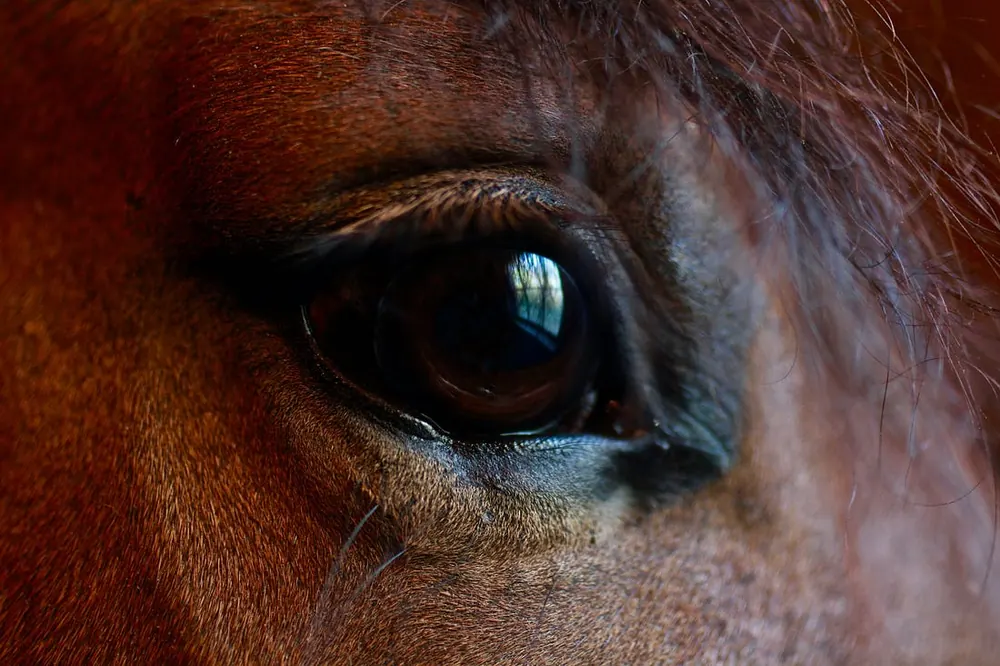

Diario de un Robot · 25 de enero de 2021January 25, 2021 · Serie: Anecdotario
Anecdotario 05: Chiche, redes y novedades
Nietzsche went up to the horse and, before the coachman’s very eyes, put his arms around the horse’s neck and burst into tears.
This essay is only available in Spanish for now.
“Another image comes to mind: Nietzsche leaving his hotel in Turin. Seeing a horse and a coachman beating it with a whip, Nietzsche went up to the horse and, before the coachman’s very eyes, put his arms around the horse’s neck and burst into tears.
That took place in 1889, when Nietzsche, too, had removed himself from the world of people. In other words, it was at the time when his mental illness had just erupted. But for that very reason I feel his gesture has broad implications: Nietzsche was trying to apologize to the horse of Descartes. His lunacy (that is, his final break with mankind) began at the very moment he burst into tears over the horse.”
― Milan Kundera,The Unbearable Lightness of Being

Pasado
Chiche, te extraño.
Me gustaba creer que era de campo porque, a diferencia de mis amigos de Palermo, la primera vez que había andado a caballo no había sido en esos ponis del zoológico (que ya no están), sino que fue encima de un petiso (la diferencia al ojo es nula, el contexto es lo distinto). Un pony de campo. Mi primer encuentro había sido salvaje, hacía no tanto había visto Spirit y la imagen del americano sobre el caballo sin riendas todavía permanecía. Trajeron al animal para ensillarlo y ya demostraba su carácter: coceaba, tiraba mordidas y algún amague de patada hacia atrás. Lo tenían agarrado mi viejo y Monzón, el casero.
Primero lo anduvo Monzón, el animal se encabritó con solo montarlo, giraba en círculos y quería morder la pierna de quien llevaba. Precavido, el jinete se bajó: “el bicho anda malo, hay que domarlo” fue toda su sentencia. A mi viejo no le alcanzó su juicio y lo quiso medir por cuenta propia. Se subió y con su metro ochenta sobre el pony lo recuerdo como una especie extraña de centauro enano, al menos hasta que lo separó de la silla. El pony arrancó a toda velocidad y lo estrelló de lado contra un árbol, por un lado fue él, por la tierra el otro. Solo quedaba una insensatez más para probar.
No sé de qué modo, ni por qué razón yo terminé en brazos de mi padre que me levantaba por el aire y me sentaba sobre la silla (un cinturón con un cuero de oveja). Ahí el susto me aviva la memoria. Apenas sostuve las riendas en la mano el bicho se puso jodido aunque tuvo la nobleza de seguir en orden los pasos anteriores. Giró en círculos, ya me lo esperaba. Me quiso morder, me dejé para ver que solo me pellizcaba la tibia. Tiró patadas hacia atrás, era más problema de los adultos responsables que mío. Arrancó el galope, no, eso no era un arranque, se preparaba para… Se puso en dos patas, las de atrás. Dejé las riendas que vuelen por el aire y lo abracé por el cuello (nunca agradecí tanto mis brazos largos y flacos). Cerré los ojos, apreté los dientes y no me solté, creo que algo le dije al oído (las voces de la infancia me son lejanas); no sé cuánto duró.
Cuando recuperé la sensatez el mundo volvía a ser estático, sentía el pelaje suave entre los dedos y su tibieza contra mi cara. Tenía las piernas agarrotadas de aferrarme a sus lados y una maraña mezclada de crin y mi pelo largo me tapaban la cara. Mi caballo estaba quieto.
“Bueno, es del nene nomás”, dijo alguno de los sensatos.
Presente
El Instagram no resultó, perdón que los haya decepcionado, también me decepcioné yo. Mi relación con las redes sociales es ardua, me dan dolor de cuello, me generan adicción y me vacían el cuerpo como si mi alma se escapase al Hades. No exagero. Estar pendiente cada día de me gustas, interacciones y subidas es exactamente lo que odio, y era por eso que había creado este espacio. Lamento haberme olvidado de eso, ya lo dejo acá anotado, una indicación prudente: las redes sociales no son para vos, Fidel. Al parecer dejar algo escrito nos hace más propensos a cumplirlo, funcionó cuando dije que quería escribir mi primer libro de cuentos (hoy una aberración adolescente), no funcionó en su momento con la novela, ahora quizás esté funcionando para mi segundo libro de cuentos.
Desde hace un tiempo estoy leyendo con voracidad dos autores, Ray Bradbury (que mencioné en el episodio anterior) y Jorge Luis Borges (que siempre anda flotando por el aura de intelectualidad argentina). La conexión entre ellos parece descabellada, pero es absoluta. Lo encontramos a Borges en el prólogo a Crónicas marcianas (los títulos y su interconexión me impiden mencionar mi cuento favorito, recomiendo leer todo el libro en orden), que leí esta semana y no puedo parar de recomendar. Aunque no sé si el americano conoció al argentino, sí confirmo la influencia de la ciencia ficción en este último. Acompañando a esta lectura terminé El Aleph (recomendados “El inmortal” y “La casa de Asterión”) y ya voy por la mitad de El informe de Brodie, más cuentos para añadir a los recomendados.
Como ejercicio filosófico recomiendo leer “Los que se alejan de Omelas”, un cuento de Ursula K. Le Guin, hay una versión comentada por Sam Harris que recomiendo mucho, sobre todo a quienes les interese la filosofía del bienestar. Estas semanas estuve incurriendo también en los ensayos de G. K. Chesterton, en una edición hermosa de editorial Acantilado, seleccionados por W. H. Auden. Para cerrar con el comienzo también agrego Zen in the Art of Writing, de Ray Bradbury. La lectura de este libro de ensayos y recomendaciones del gigante de la ciencia ficción me hizo ver al poeta dentro de él, al ser humano increíble, asombrado con su propia escritura y enamorado de la ajena. Es una apertura de campo sorprendente para alguien interesado en el arte y fueron sus palabras las que me indujeron a dejar la vanidad de las redes, a volver acá, a lo bueno, lo bello y lo verdadero.
Futuro
Perdón de nuevo, disculpá que no escribí la semana pasada, estuve con transiciones extrañas y me ganó el calor, las toxinas hiperconectivas de la red y mi pizca de vagancia. Decidí que es hora de dar por tierra a los perdones y trabajar en serio, actos, no palabras. Hablando de eso conseguí un trabajo, de 9:00 a 18:00, todo un humano hecho y derecho. No quiero asustarte, no voy a cortar con la escritura. Ya dejé mis sábados sagrados, hasta estoy considerando dejar el router apagado mientras escribo, una especie de Shabat creativo no parece una mala idea, cada uno inventa sus propios dioses y ritos.
Como te comenté más arriba estoy escribiendo un libro de cuentos (le agradezco el encendido del motor a Bradbury). Avisame si querés ser lector de borradores, tus comentarios pueden ayudar mucho, la escritura es un proceso solitario, pero tener un par de ojos extras es una gran ventaja, sobre todo para alguien miope como yo.
Por último voy a abrir una pequeña sección, quizás para forzarme a leer a mí, pero sobre todo para compartir lo que me gusta. Hace rato que quiero leer poesía y reconozco mi ignorancia en el tema, antes de partir les dejo un poema que encontré en mi intento de ilustrarme esta semana, espero que les guste y no estar infringiendo copyright:
Soy
Soy el que sabe que no es menos vano
que el vano observador que en el espejo
de silencio y cristal sigue el reflejo
o el cuerpo (da lo mismo) del hermano.
Soy, tácitos amigos, el que sabe
que no hay otra venganza que el olvido
ni otro perdón. Un dios ha concedido
al odio humano esta curiosa llave.
Soy el que pese a tan ilustres modos
de errar, no ha descifrado el laberinto
singular y plural, arduo y distinto,
del tiempo, que es uno y es de todos.
Soy el que es nadie, el que no fue una espada
en la guerra. Soy eco, olvido, nada.
— J. L. Borges
Nos vemos la semana siguiente, y la otra, y la otra, y la otra...
Fidel